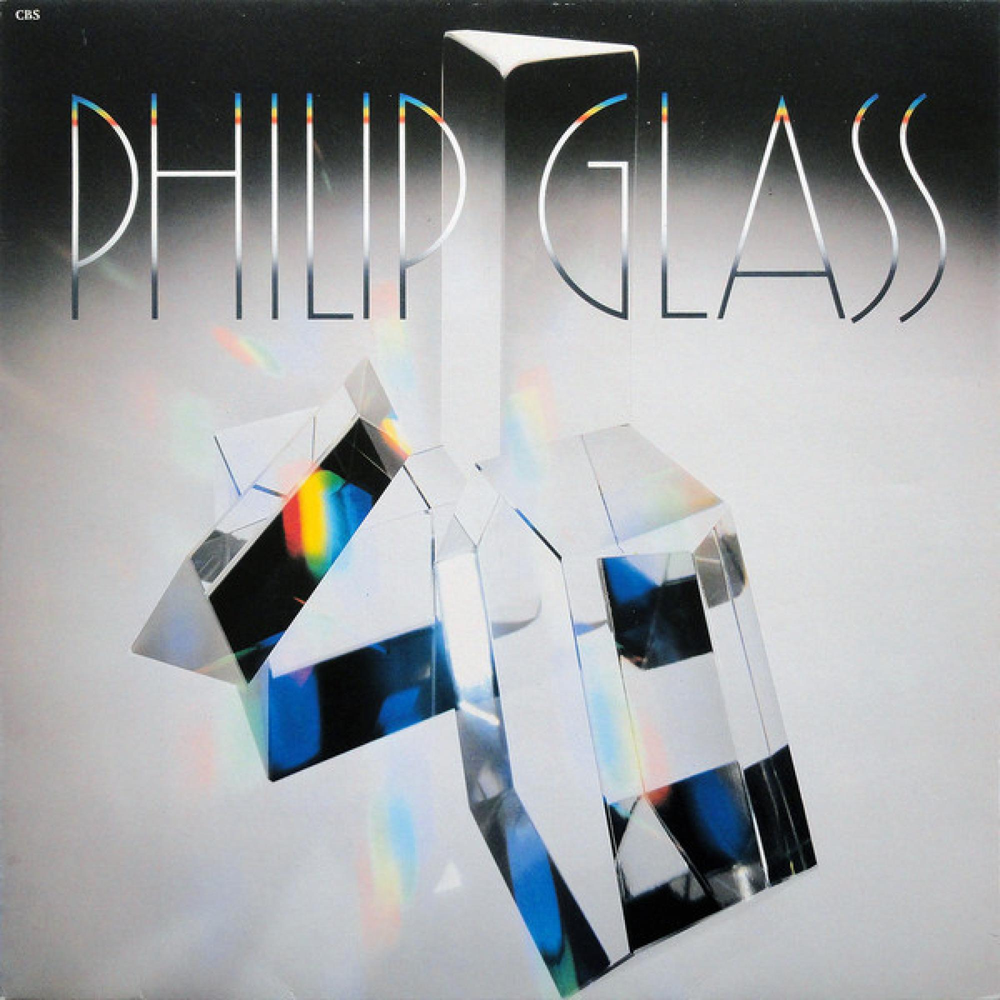

Instrumentation in minimalist music varies widely but often features small ensembles, keyboards, percussion instruments, and voices. Minimalist composers frequently use repeated patterns shared between different instruments, creating interlocking textures. Instruments are usually chosen for their ability to maintain a steady pulse and repeat patterns accurately. Electronic instruments and amplified ensembles are also common in some minimalist works.
Example:
A minimalist piece may use pianos, voices, percussion, and woodwind instruments playing repeated patterns that combine to create a rich and constantly evolving sound.